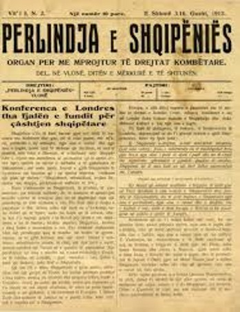
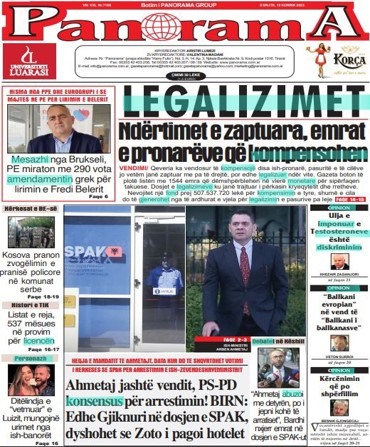
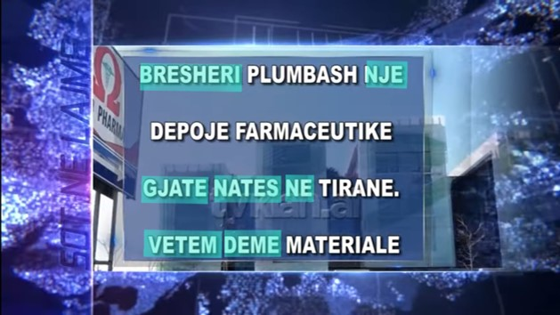

Gazeta "Dielli" 1919
Në foto është një artikull nga gazeta e mirënjohur Dielli. Kjo gazete është themeluar në 1909 dhe ka pasur shkrimtarë si Fan Noli dhe Faik Konica. Artikujt në këtë gazetë, edhe pse shqiptaro-amerikane ka një gjuhë të pastër dhe pa gabime.

Gazeta "Panorama" 2023
Fotoja në të majtë është marrë nga një gazetë aktuale. Gazeta "Panorama" është një gazetë shqiptare. Me ngjyren blu janë shënuar huazimet që janë përdorur në këtë artikull, disa prej të cilëve kemi vënë gjegjëse në shqip:
- Kompensojë- Dëmshpërblejë
- Legalizoj – bëj të ligjshme
- Konsensus- Mirëkuptim
- Opinion – mendim
- Abuzoi – shpërdoroi
- Amendament – Shtojcë e një ligji
- Gjenerohet – prodhohet

TV Klan 2025
Fotoja është marrë nga kanali "TV Klan". Me ngjyrën blu janë shënuar të gjitha gabimet drejtshkrimore:
- Mungesë e ë-ve
- Mungesë e shenjave të pikësimit
- Fjali jo të plota
- Vetëm dëme materiale (Pa kryefjalë/kallëzues)